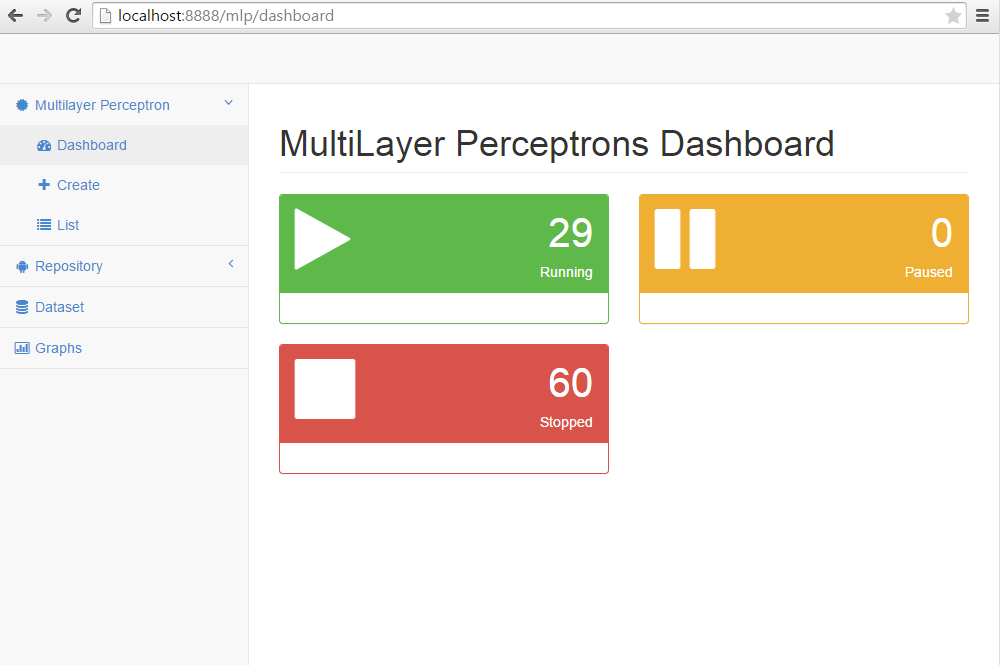
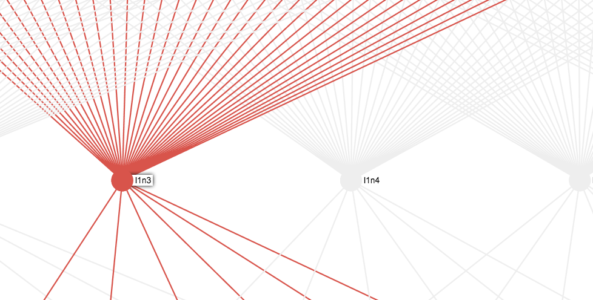
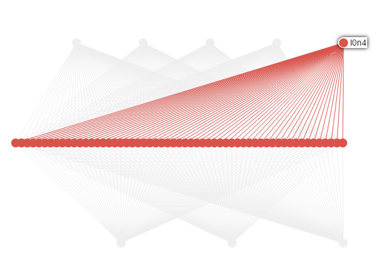
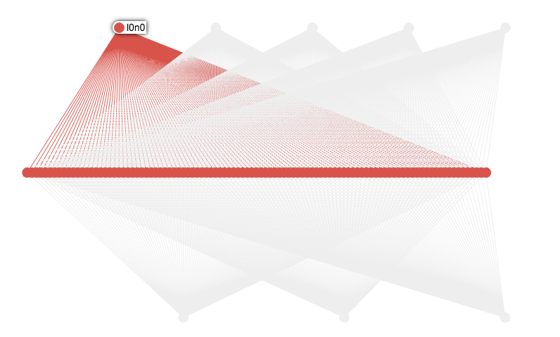
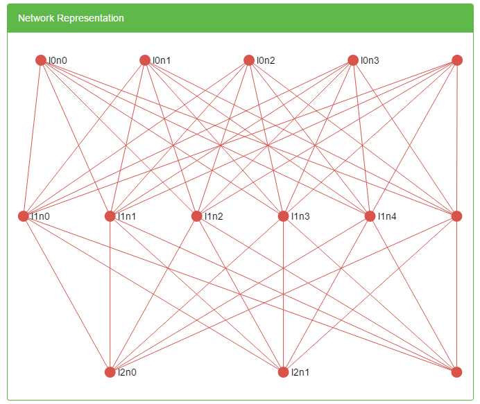

Multilayer Perceptron Web Application
A web application for experimentation with training perceptrons. This includes automatic donwload of data sets, transormation and creation of test and validation data sets. There is a dashboard to view the status of your training threads. A list view gives you a list of all the learning threads in memory. You can view the perceptron in detail view, with a convergence graph refreshing every 5 seconds. Also see a grahpical representation of the perceptron on the details page. Compare all the convergence graphs of the different data sets and more.

Download source
git clone git@github.com:LindesRoets/mlpnn-experiment.git
Compile source code
mvn compile
Create java docs
mvn javadoc:javadoc
Execute tests
mvn test
Dowload and transform data sets in offline mode
mvn test -Dtest=DownloadDataSet

Run application with maven
mvn spring-boot:run
Package application into jar
mvn package
Run application from jar
java -jar your-jar.jar
***Requirements***
java 1.8.0.*


